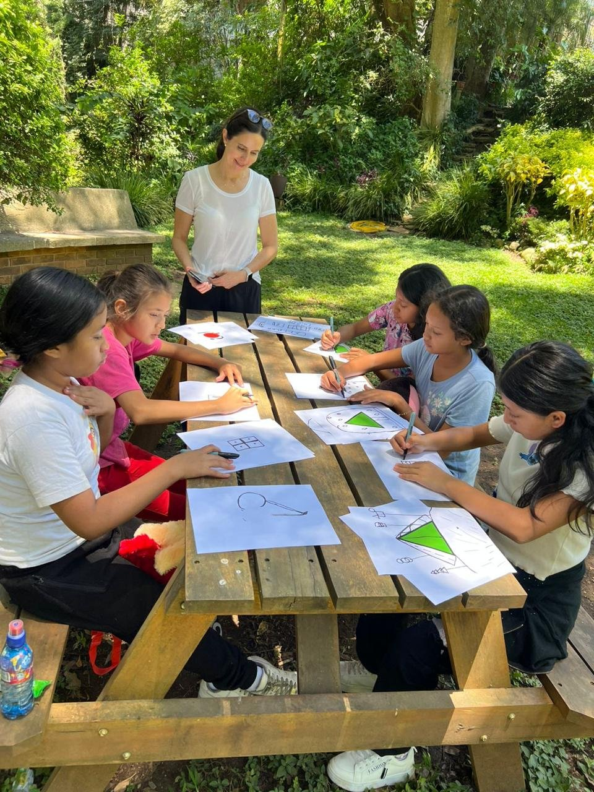

Arteterapia · una mirada personalista y logoterapéutica
II Congreso Mundial de Personalismo · Madrid 2026
Cuando la palabra
no alcanza.
El arte como mediación entre la persona y el sentido.
Carolina Heinemann · 4Meaning

La tesis
El arte es
una mediación.
Entre el mundo interior de la persona y el lenguaje en que ese mundo puede pensarse, comunicarse y transformarse.

Eje 1 · Antropología
La persona: creadora, única, irrepetible, con una dignidad que no depende de las circunstancias. Wojtyła · Burgos · Mounier
Eje 2 · Sentido
Tres caminos al sentido: los valores creativos, los vivenciales y los de actitud. Viktor Frankl
La persona
Creadora.
Única. Digna.
El ser humano es creador, no solo consumidor. Al crear, no solo produce algo: se construye a sí mismo. El cuerpo es «materia espiritualizada», el lienzo del espíritu.
Tres caminos al sentido
Un método, tres ámbitos.

Valores de actitud · mujer en crisis
Paulina.
17 años. Embarazada, sola, sin recursos. Para el sistema, un caso más.
La mirada
Un «qué».
O un «quién».
Su dignidad no se perdió con la situación: es un dato ontológico, no un atributo social. Solo necesitaba reconocerla. El arte fue el lenguaje que se lo permitió.
El punto de partida
Dos meses
sin una palabra.
La encontré en un hogar de acogida, mirando fijamente hacia el techo. Llevaba dos meses sin comunicarse.

El puente
El crayón
se volvió diálogo.
Primero yo sigo su trazo. Después ella el mío. Hubo risa. Hubo conexión sin palabras.
El acto creativo
Importa el proceso,
no el resultado.
Al trazar una línea en una hoja, Paulina no solo hace un dibujo: se reconoce y se construye en el acto. Wojtyła · efecto intransitivo · Burgos · materia espiritualizada
El método
La sensación
sentida.
Trabajamos las tres dimensiones: mente, cuerpo y espíritu. Lo que se siente al escuchar lo que el cuerpo revela.

«Un nudo
en la garganta.»
No nace de la mente, sino del diálogo entre lo que siente el cuerpo y el arte.

El cambio de sentido
«¿Cómo me
siento hoy?»
La invito a encontrar una imagen que lo represente. Un corazón apretado y adolorido.

Vemos la
misma imagen.
«La obra de arte es un lugar de encuentro entre dos personas.» El sentido no se inventa: se descubre. Guardini
La persona restaurada
Digna, libre
y responsable.
Se reconoce sin victimismo, dueña de su vida. Comprendió el sentido de ser madre: un amor creado en libertad y ahora con responsabilidad.

El desenlace
Nace su hija.
Su principal motivación para salir adelante.

Hoy.
Su hija tiene dos años. Es feliz. Las dos están bien.
El mismo arte, otras vidas · parejas
El encuentro
que dignifica.
En Trascendencia, las parejas vuelven a su primera mirada. El tú como condición del yo. «Me veo en el otro y el otro se ve en mí.»

Valores creativos · niños en pobreza extrema
De «miembro»
a «prójimo».
No un caso a intervenir, sino un quién a dignificar. Dan algo de sí al mundo, aunque ese mundo sea de cartón, crayón y música improvisada.
El taller, vivo
Las emociones
se mueven.
Se reconocen, se mueven, y pueden moverse. Sin que nadie se lo explique.
El cierre
El arte llega donde
la palabra no llega.
No es un recurso técnico añadido. Es traducir una antropología verdadera al lenguaje del arte, para que la persona encuentre en su propia obra lo que de otro modo le costaría reconocer en sí misma.
Gracias.
Carolina Heinemann · 4Meaning
II Congreso Mundial de Personalismo · Madrid 2026